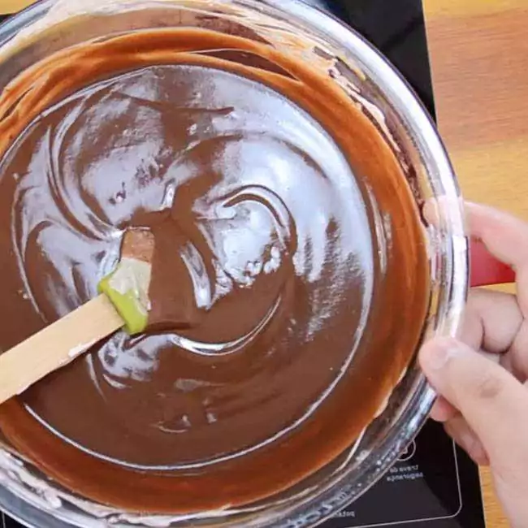

Receita de Bolo De Chocolate
Ingredientes
- 2 xícaras de farinha de trigo
- 1 xícara de açúcar
- 1 xícara de chocolate em pó
- 1 xícara de leite
- 1/2 xícara de óleo
- 3 ovos
- 1 colher de sopa de fermento em pó

Modo de Preparo
- Preaqueça o forno a 180°C.
- Em uma tigela, misture a farinha, o açúcar e o chocolate em pó.
- Adicione o leite, o óleo e os ovos, e misture bem.
- Acrescente o fermento e mexa delicadamente.
- Despeje a massa em uma forma untada e enfarinhada.
- Leve ao forno por aproximadamente 40 minutos.
- Retire do forno, deixe esfriar e sirva.